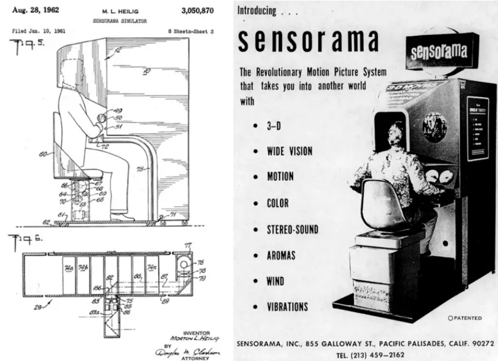
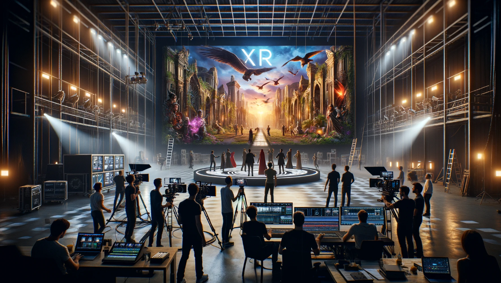

History
What is XR?
Extended Reality (XR) has most often been used as an umbrella term when it came to defining other technologies that form virtual productions (MR, VR, AR, etc.). However, XR is also one of these technologies that can be used to create a virtual production. XR, as it is currently defined, is the use of large LED volumes to create virtual environments that talent can interact with. The evolution of XR software allows for much more creativity when building virtual productions, and has already found use in multiple different professions so far, such as gaming, entertainment, education, sports, and more.

Lets take a step back though, and look at XR back when it was just the umbrella term.
XR: Umbrella Term (VR)

When looking at the XR as the umbrella term for virtual productions, we can trace it's first point of origin all the way to the 1800, with the more modern forms of it being created in the 1960's. In 1956, cinematographer Morton Heilig created the first VR machine, Sensorama, which combined 3D, color video with audio, smells, and a vibrating chair to immerse the viewer in the movie. In 1961, engineers from Philco built upon Heilig's idea, creating the Headsight headset, the first VR headset with motion tracking technology which was designed for military use.
In 1985, VPL Research Inc was founded and created VR goggles and gloves that could be sold to the public. One of it's founders, Jaron Lanier, coined the term "virtual reality (VR)" in 1987. Within the early 1990's, VR arcade machines were created, with one example being the SEGA VR-1 motion simulator. Soon after that, affordable VR headsets were becoming available for people around the world for individual use.
In 2010, 18-year-old Palmer Luckey created the prototype for the Oculus Rift VR headset. The prototype contained a 90-degree field of vision and use of computer processing power, which helped spark interest in the development of VR. So much so, after a succsesful Kickstarter campaign of $2.4 million, Facebook bought the Oculus VR company for $2 billion in 2014. Sony and Samsung also announced their own VR headsets, Playstation VR (Project Morpheus) and Samsung Gear VR. By 2017, hundreds of companies of were developing their own VR products, including HTC, Google, Apple, Amazon, Microsoft, and etc. The latest addition to VR is the highly anticipated Apple Vision Pro, which released for purchase on February 2, 2024, at the price of $3,499.
XR: Umbrella Term (AR)
Moving on, the term "augmented reality" was coined by Boeing researcher Tom Caudell in 1990, however the first AR headset was actually created in 1986, by Harvard professor Ivan Sutherland. Called “The Sword of Damocles,” the headset displayed computer-generated graphics that enhanced the user’s perception of the world and the headset is considered to be an early precursor to today's AR experiences. In 2008, the first commercial AR application was created by German agencies in Munich for advertising purposes. They designed a printed magazine ad of a model BMW Mini, which, when held in front of a computer’s camera, also appeared on the screen. Because the virtual model was connected to markers on the physical ad, a user was able to control the car on the screen and move it around to view different angles, simply by manipulating the piece of paper.
Sports have been using AR for a long time with recent technological advancements allowing for full render models to overlap with the real-world, with one of these instances being when the Carolina Panthers created a AR experience for their fans using a panther mascot jumping around in the stadium. Sports has also used AR to give the audience better understanding of the game. For example, in 1998, the Sportsvision broadcast the first live NFL game with the yellow yard marker (a yellow line overlayed on top of the live camera feed). Soon after this, the idea of overlaying graphics over the real-world view quickly spread to other sports broadcasting, with them now being seen in almost every live broadcasting of a sport's game.
Perhaps the most worldwide known application of AR is the mobile game Pokémon Go, which launched in July 2016 and hit its peak in August of almost 45 million users, with many still playing it to day. Other games have come out that are similar to Pokémon Go, like Harry Potter: Wizards Unite and Jurassic World Alive, however they weren't as successful. Despite this, AR has still seen huge implication for areas outside of entertainment, such as marketing, fashion, tourism, and retail, where commercial AR apps have already been increasing in numbers and popularity. A great example is when IKEA released an AR app that allowed customers to virtually preview their furniture options before making a purchase.
XR: Umbrella Term (MR)
Mixed reality (MR) is an emergent technology that blends VR and AR. In 1994, Researchers Paul Milgram and Fumio Kishino coined the term, in order to describe the continuum between totally real and totally virtual environments These days, mixed reality describes environments in which real and virtual subjects and objects interact in real time — and in which you can interact with both real and virtual components. This requires a headset that has either a transparent lens or a camera, so that you can still see the real world. While MR is still a recent technological development, there have still been some promising applications of it that are beginning to see adoption. One of them being for surgeons in healthcare to use MR-powered X-ray vision to see under a patient's skin and have a views of their blood vessels and bones during surgery.
XR: As it's own thing
As time progressed, XR eventually became it's own in dependent technology, with it finding many uses in both entertainment and the corporate business world. Similar to MR, XR technology is created with the intent that it will be interacted with. However, what truly separates XR from the rest is that while conventional virtual production LED workflows are typically constrained within the boundaries of an LED Volume, extended reality production LED workflows break free from the confines of the LED canvas. Through the use of augmented reality graphics and set extension techniques, the virtual set seamlessly expands beyond the LED stage, blurring the lines between the tangible world and the virtual one. Additionally, XR workflows can incorporate augmented reality graphics as foreground elements in front of individuals or objects, adding depth to the scene. The outcome is an immersive experience meticulously choreographed with precise camera tracking.
XR creates a immersive experience that allows you to accomplish multiple things. XR allows you simplify complex information but providing a unique platform for breaking down complex data or concepts making their easier to understand. XR also allows you to create customized experiences, with Virtual environments can be highly customized to your clients and allow you to captivate you audience with immersive visuals and interactions. Most importantly, especially when it comes down to business, XR production is able to strengthen your brand and leave a lasting impression on your audience by showcasing your commitment to innovation and cutting-edge technology.
References
- What Is the Difference Between Mixed Reality, Augmented Reality, Virtual Studios, and Extended Reality?
- Mastering the Art of Corporate Communication with Extended Reality Stages
- The Fascinating History And Evolution Of Extended Reality (XR) – Covering AR, VR And MR
- Blast From the Past: Virtual Reality
- History of VR – Timeline of Events and Tech Development
- History of Augmented Reality
- The Mainstreaming of Augmented Reality: A Brief History
- What Is Extended Reality (XR)?
- What is mixed reality?